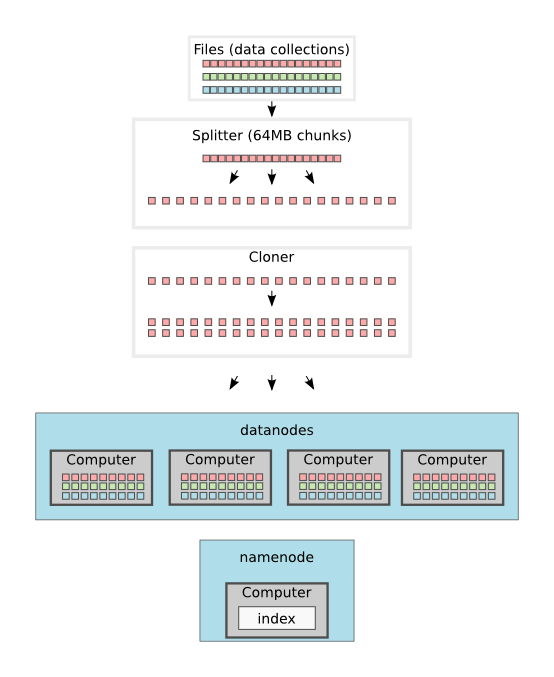
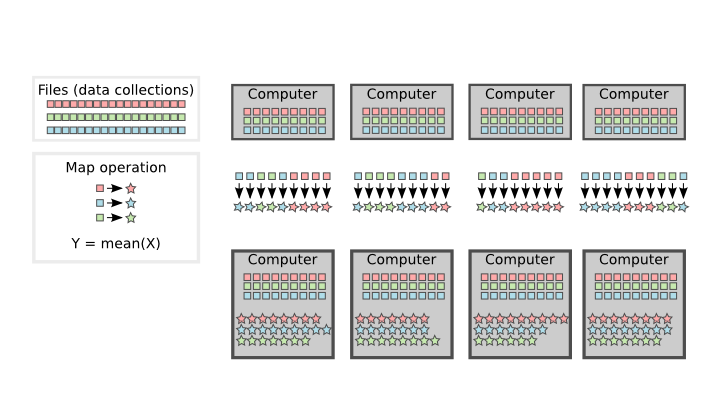
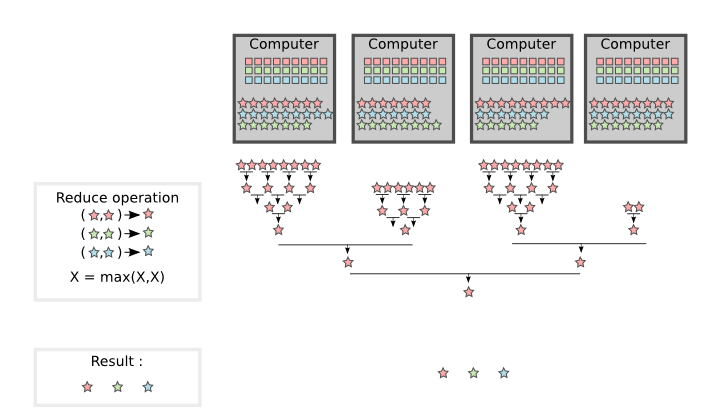
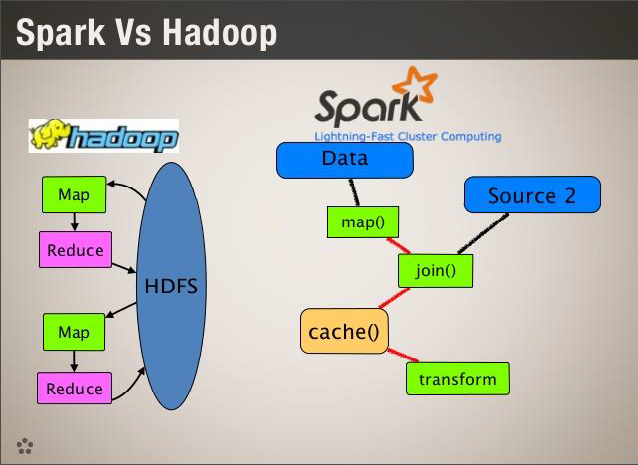
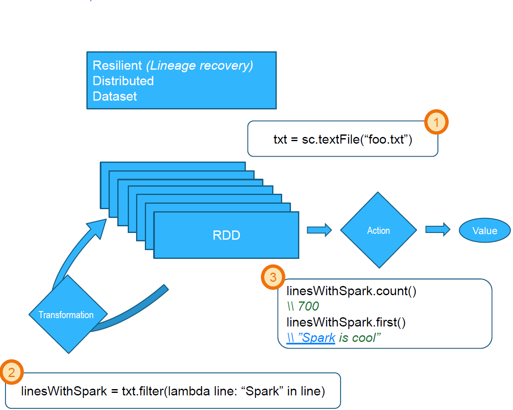
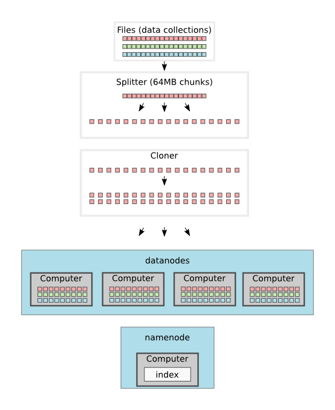
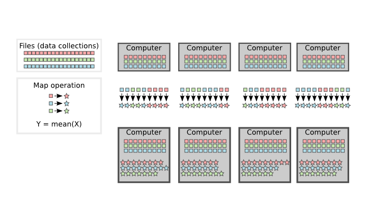
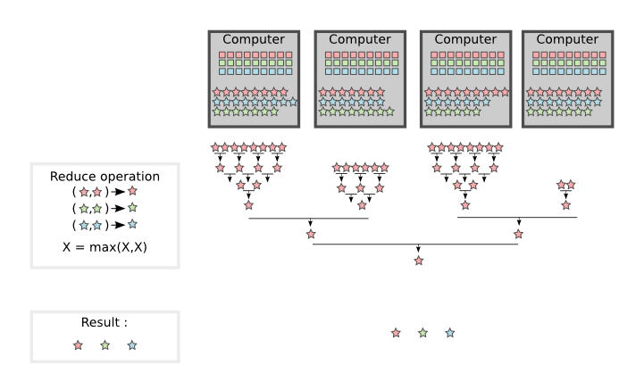
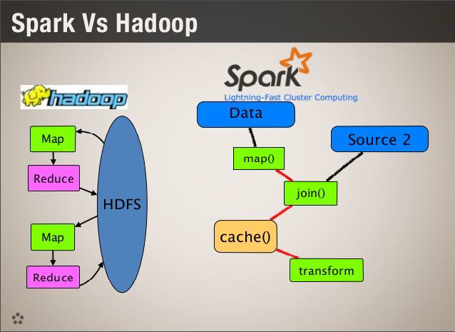
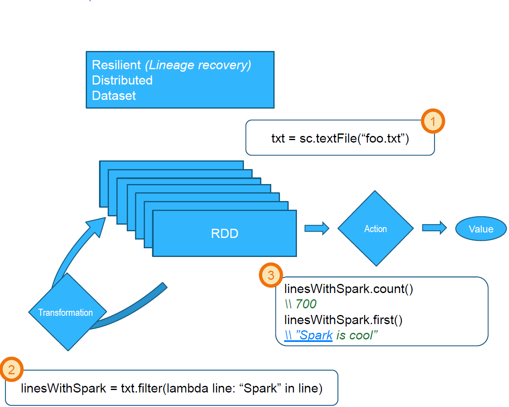

Distributed computing with Spark
Created by Matthieu Le Goff



Map operation

Reduce operation

MapReduce VS Spark

Transformations and actions

Improvements (1)

Improvements (2)


Created by Matthieu Le Goff





